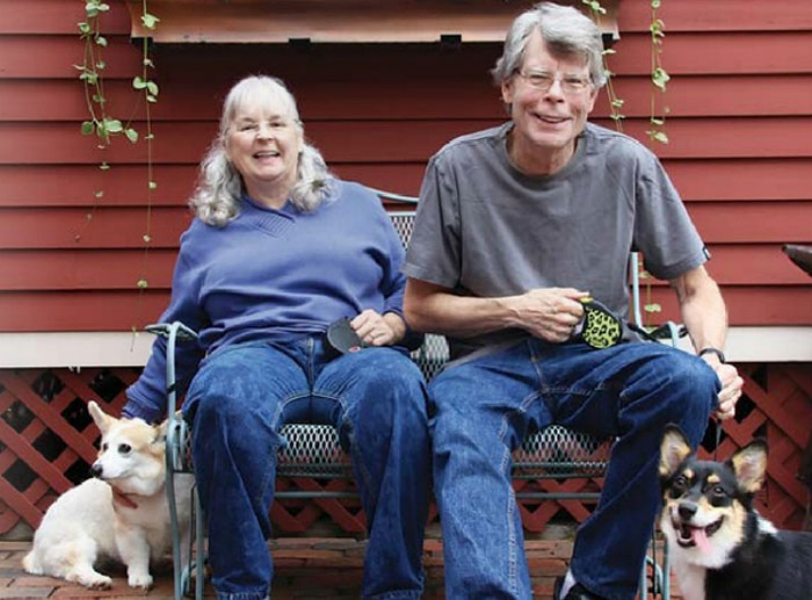
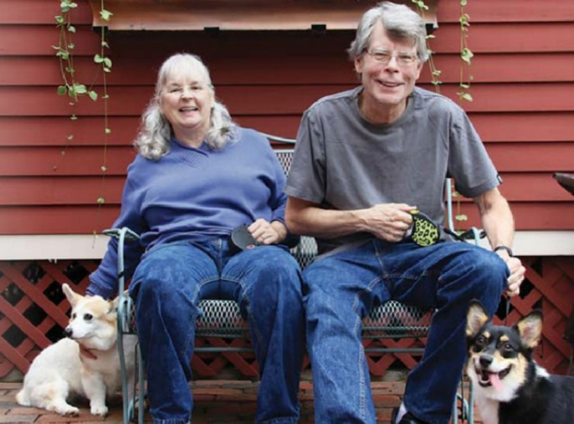
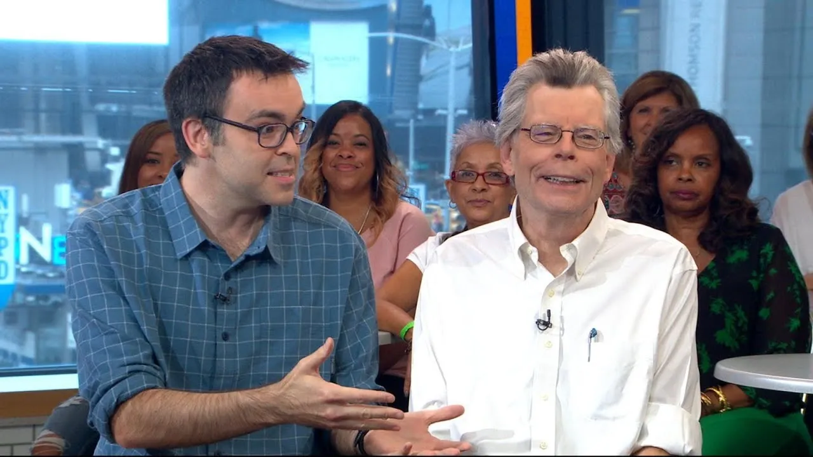
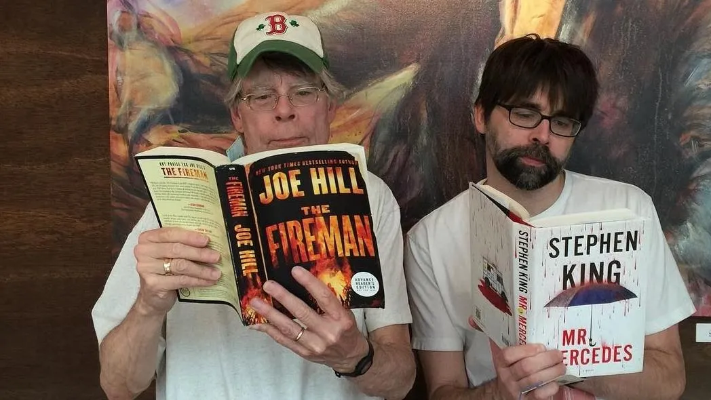
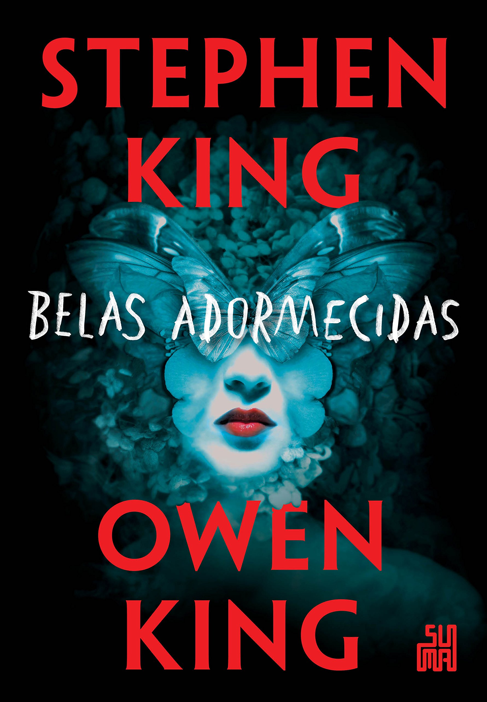
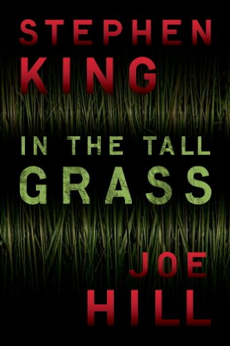
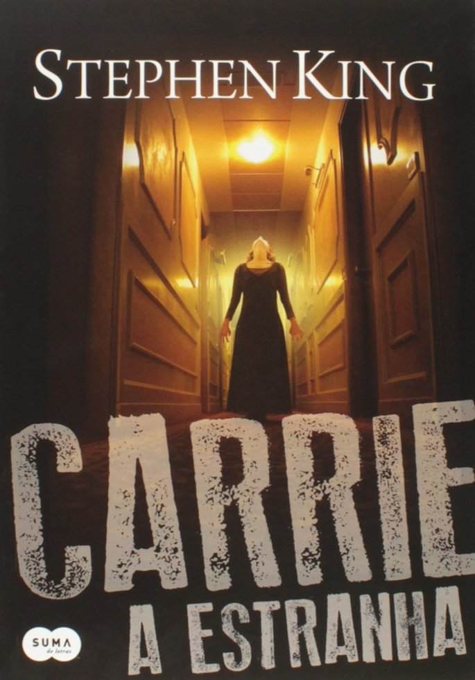

Stephen King
Um pouco sobre o mestre
Stephen Edwin King é um escritor norte-americano de terror, ficção sobrenatural, suspense, ficção científica e fantasia. Os seus livros já venderam mais de 400 milhões de cópias, com publicações em mais de 40 países. É o 9º autor mais traduzido no mundo.
Muitas de suas obras inspiraram grandes sucessos adaptados para séries de televisão e para o cinema, como a série “The Dead Zone” e o filme “À Espera de Um Milagre”. O autor também já foi convidado para colaborar no roteiro de séries de TV, como “Arquivo X”, em que ele assina o episódio “Feitiço”. É um dos autores mais adaptados para o cinema e para a televisão.
O pai abandonou sua família quando Stephen tinha apenas dois anos de idade, deixando a ele, sua mãe e irmão mais velho adotivo em graves dificuldades financeiras. A família, então, voltou para a cidade natal da mãe de Stephen e depois mudou-se para diversas cidades nos Estados Unidos.
Em 1966, entrou para a Universidade de Maine, onde ele escrevia uma coluna intitulada "King's Garbage Truck" para o jornal estudantil, o “Maine Campus”. King ensinou na Academia Hampden em Hampden, Maine e passou a escrever histórias curtas para revistas. Casou-se em 1971 com Tabitha Spruce, que ele conheceu na biblioteca da universidade quando ainda eram estudantes.
Foi, então, morar com sua família em um trailer, levando uma vida bastante simples. Mas logo King passou a escrever romances. Começou a esboçar as primeiras ideias de uma personagem que era uma jovem com poderes psíquicos, porém, abandonou a ideia e descartou os esboços. Sua esposa resgatou os escritos do lixo e encorajou-o a retomar e terminar o romance, a que ele chamou de “Carrie”, concluiu e mandou para publicação, em Doubleday. Neste período ao autor perde sua mãe para o câncer aos 59 anos de idade. Antes que ela falecesse, porém, sua tia Emrine leu o romance para a mãe de King.
King recebeu de Doubleday 2.500 dólares adiantados pela publicação de “Carrie” como novela, valor baixo mesmo para a época. Porém, os direitos autorais lhe renderam posteriormente consideráveis somas em dinheiro e King começa a ganhar reconhecimento como autor. Deixa, então, de lecionar e passa dedicar-se somente àprodução literária e se muda com a família para o Colorado. Lá vivem por cerca de um ano e, durante essa temporada, Stephen escreve “The Shining” (O Iluminado), obra adaptada e levada aos cinemas pelo diretor Stanley Kubrick no ano de 1980. A família retorna, então, em 1975, para Maine, onde King conclui The Stand (A Dança da Morte). A partir de então, Stephen passa a produzir praticamente uma obra a cada ano ou a cada dois anos aproximadamente.
No ano de 2003, Stephen King foi agraciado com o título distinto da The National Book Fondation por sua contribuição para a literatura americana.
A família King

Stephen, Tabitha e Owen King mais Joe Hill, o que esses nomes têm em comum? Talvez, para alguém mais desligado, são apenas 4 escritores. O fato de serem uma família, pai e mãe com seus 2 filhos diz muito sobre talento ser hereditário. Ao menos, com a família King não vejo argumentos contrários a isso. O Mestre do Terror, obviamente é o carro chefe, digamos assim, é a marca maior da família. Mas o que talvez Stephen King não pudesse imaginar é que ele e Tabitha fossem constituir uma família literária. A única exceção à regra familiar ‘kinguiana’ é Naomi King, que não seguiu carreira literária.
 

A história mais famosa envolvendo Tabitha foi o resgate dos rascunhos de Carrie, o primeiro romance de Stephen King, que o autor simplesmente descartou, jogou fora de verdade, não me recordo se por não está gostando ou outra coisa. Mas, no final das contas, Tabitha mandou Stephen resgatar o que jogou fora e terminar a obra. O resultado final é o que já sabemos, Carrie tornou-se o primeiro grande sucesso do Stephen (inclusive, um dos meus livros favoritos, obrigado Tabitha!). Mas é claro que Tabitha é muito mais do que a mãe dessa família talentosa, ela tem também sua veia artística e já tem algumas obras de destaque, inclusive lançada pela Darkside, uma das principais editoras brasileiras quando falamos de terror e suspense. Tabitha nasceu no Maine, em 24 de março de 1949. Casou-se com Stephen King em 7 de janeiro de 1971. 10 anos depois, ela lançava o seu primeiro livro Small World. No Brasil, o livro chegou ainda nos anos 80 como As Miniaturas do Terror e, acabou virando uma raridade no mercado. Mas, a Darkside, em 2019 trouxe novamente para o mercado, agora com o nome de Pequenas Realidades. Obviamente, o trabalho de Tabitha ainda sofre uma injusta comparação com o trabalho de Stephen King, mas Tabitha tem um leque maior, digamos assim, de escrita. Ela trafega facilmente entre o suspense, a ficção e o terror, mas também escreve contos e poesias. Ela escreveu dez romances, sendo que dois não foram publicados, dois trabalhos de não ficção, seis contos, cinco poemas e um roteiro de televisão. Mas é claro que não poderia faltar um trabalho em parceria com o marido, não é mesmo? Em 2004, Tabitha e Stephen assinaram o roteiro de um episódio da série Kingdom Hospital, baseada na minissérie dinamarquesa The Kingdom - de Lars Von Trier.
 Owen Philip King nasceu em 21 de fevereiro de 1977, no Maine, e começou a demonstrar o interesse na literatura, no ensino médio (high school).
O seu primeiro trabalho como escritor foi um livro que reunia pequenos contos de sua autoria. We’re All in This Together foi lançado em 2005 e era composto por 3 contos e uma novela. O seu primeiro romance, Double Feature, viria a ser publicado somente em 2013, mas enquanto isso, muitos de seus contos eram publicados em diversos jornais, como One Story e Prairie Schooner.
O maior sucesso de Owen - até o momento - é um trabalho em parceria com seu pai: Belas Adormecidas, de 2017. Além da literatura, Owen King também trabalhou para a televisão, como por exemplo, na adaptação do romance The Great and Secret Show, de Clive Barker e, como de se imaginar, esteve na produção da adaptação de The Stand - obra de seu pai -, para a CBS, escrevendo, inclusive, um novo final para a minissérie, junto com seu pai.
O filho mais famoso do relacionamento Stephen e Tabitha, Joseph Hillström King, nasceu no dia 3 de junho de 1972 e já tem uma carreira literária bem sólida, podemos dizer.
Joe Hill é o King com um trabalho mais semelhante ao do seu pai, a começar pela escolha de usar um pseudônimo Joe começou a carreira sem se revelar ao mercado, optando apenas para contar ao mundo que era um King quando já tinha ganho um Bram Stoker Award de Melhor Coletânea de Ficção e o British Fantasy Award pela obra Fantasmas do Século XX, de 2005, simplesmente a sua obra de estreia.
Esses foram apenas os dois primeiros prêmios de Joe Hill, que tem ainda um Bram Stoker Award de Melhor Primeiro Romance (por A Estrada da Noite, de 2007), dois British Fantasy Awards como Melhor Revista em Quadrinhos ou Graphic Novel (por Locke & Key, em 2009 e 2012) e um Eisner Awards, como Melhor Escritor de HQs (2011).
Obras mais famosas de Stephen King e seus filhos
| Título | Data de publicação | Capa |
|---|---|---|
| Sleeping Beauties (Belas Adormecidas) | 26 de setembro de 2017 |  |
| In The Hall Grass | 1 de agosto de 2012 |  |
Obras mais famosas de Stephen King
| Título | Data de publicação | Capa |
|---|---|---|
| Carrie (Carrie, a estranha/Carrie) | 5 de abril de 1974 |  |
| The Green Mile (À Espera de um Milagre) | Março–Agosto de 1996 |  |
| The Shining (O Iluminado/A Luz) | 28 de janeiro de 1977 |  |
| The Stand (A Dança da Morte/The Standː A Dança da Morte) | Setembro de 1978 |  |
| 11/22/63 (Novembro de 63/22.11.63) | 8 de novembro de 2011 |  |
| The Dark Tower VII: The Dark Tower (A Torre Negra: A Torre Negra) | 21 de setembro de 2004 |  |
| The Dark Tower IV: Wizard and Glass (A Torre Negra: Mago e vidro) | 4 de novembro de 1997 |  |
| The Dark Tower III: The Waste Lands (A Torre Negra: As Terras Devastadas) | Agosto de 1991 |  |
| The Dark Tower II: The Drawing of the Three (A Torre Negra: A Escolha dos Três) | Maio de 1987 |  |
| It (It: a Coisa) | 15 de setembro de 1986 |  |
The Dark Tower V: Wolves of the Calla (A Torre Negra: Lobos de Calla) | 4 de novembro de 2003 |  |
Um pouco mais sobre o mestre
Saiba mais sobre a bibliografia completa em: